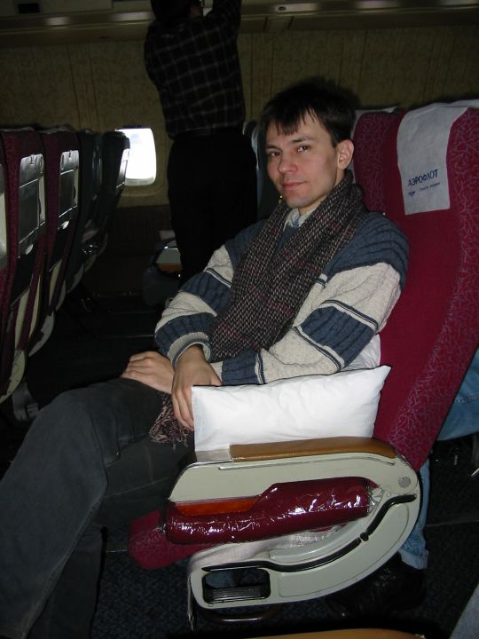
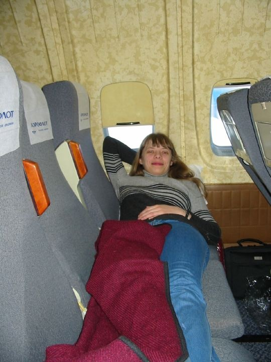
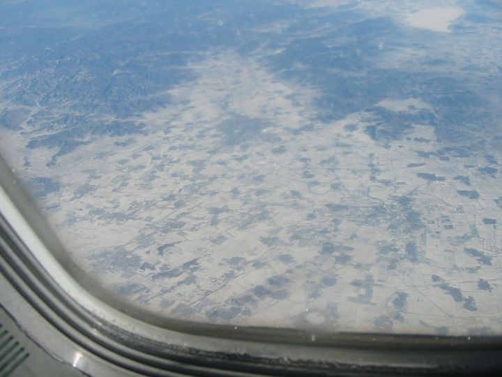
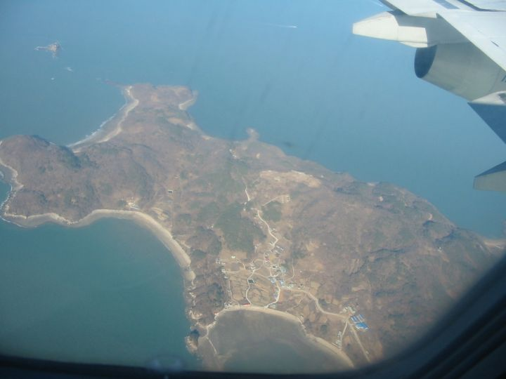

| Российская часть нашего путешествия |
|
| Дорога до Москвы |
|
Темнело довольно рано, а свет "выдавался" проводниками очень экономно. (По карточкам?) Вечером второго дня его попытались включить поярче, в результате чего он погас полностью... правда минут через десять его восстановили, но до прежнего уровня "а теперь пассажиры спят". Так и ехали в полутьме - читать было невозможно, благо что и нечего - газету-то я так и не успела купить. Зато вода горячая (очень) была почти постоянно. Пока не наступило Рождество... Тогда стало еще и холодно. :-/ Первую ночь Глебу было жарко спать наверху и он лег внизу. Там он, правда, замерз (пока не догадался взять второе одеяло, чтобы отгородиться от окна), а на вторую ночь было холоднее, так что даже мне на втором этаже было довольно прохладно. К началу второго дня вышла почти половина вагона, верхние полки были почти все пустые. Нашими соседями оказались: очень молчаливый шофёр, который почти все время проспал; очень активная бабушка 75-ти лет и кок (бухгалтер по образованию) Галина. Бабушку нам "передали" из конца вагона, постоянно повторяя, что нам несказанно повезло всвязи с таким приобретением. :) Я, правда, так и не спросила, почему же они так легко отказались от столь ценной соседки... Но бабушка оказалась очень даже ничего. А Галина долго скрывала, кем же она работает, а я так и не смогла отгадать, только смотрела её фотографии из разных городов и стран, судя по которым, она в год посещала стран по пять, а то и больше... пришлось ей самой признаваться. Активно звала нас к себе в Петрозаводск... сказала, что квартиры у них дорогие (аж 6000$ однокомнатная! :)))) :( По цене наших однокомнатных у них уже двухкомнатные), зато с общежитиями (и для семейных тоже) никаких проблем. А главное - Финляндия рядом, все ездят клубнику собирать. А потом Галина загадочным голосом сказала: "А я догадалась по вашему чемодану, что вы едете за границу!" О как! :( Наш чемодан нас выдал... Так сказать, "чемодан мой - враг мой". :) А Галина продолжает: "И я даже угадала - куда." Это уже стало интересным, и я не удержалась от того, чтобы поинтересоваться, куда же это мы собрались... Оказалость - в... Германию! :) И опять же чемодан... бабушка-соседка предположила, что такой "красивый" стоит, наверное, аж больше тысячи рублей! :) Галина сказала, что она в Брюсселе практически такой же купила за 120$, спросила, за сколько мы. Расстроилась, когда Глеб назвал цену ровно в два раза меньшую. Глеб её "успокоил": "А Вы, наверное, не торговались?" :))) А вообще мы чемодан как засунули в первые 5-10 минут наверх, так и не трогали до Москвы. И чего все к нему так привязались?! В целом было в вагоне чисто, постельное я даже сначала приняла за новое, и только по тому, что оно было влажным, можно догадаться, что это не так. Дорожку на полу перестилают, видимо, каждый день. В туалете и бумага, и бумажные полотенца, и лохматый коврик на полу. Короче, если бы не темнота и прохладная последняя ночь, всё было бы очень даже хорошо. |
| Москва |
|
Приехали, как ни странно, вовремя. Добрались мы до метро, купили проездную карточку, позвонили Стасу и пошли... и пошли... пошли, пошли, пошли, по... и так далее. :((((( С Чкаловской на Курскую, оттуда на кольцевую... Оооох... Остатки еды весили больше ноутбука. У меня сегодня, на следующий день, очень болят руки. :( Хорошо, что Стас нас встретил, довел до дома, помог все донести. До дома далеко. Потом он еще и отвел нас позвонить, а также снабдил карточкой для межгорода. И мы поехали в посольство. |
| Посольство |
|
Естественно, идти было далеко. :( Но, к счастью, Глеб хорошо помнил, где оно находится. Пришли мы туда уже около 10ти часов. Ну что сказать про посольство?.. Много корейцев. :) Везде надписи на корейском, не всегда с переводом. Проходная на территорию такая же, как во всех посольствах в Баторе... или они вообще везде такие? Везде камеры наблюдения, охрана, после входа одного человека, пока он не прошёл, никто войти не может... Внутри стоят автоматы с бесплатной питьевой водой (да-да, как и положено, холодной и горячей) и с платным какао, за 5 рублей. А ещё меня порадовала надпись на одной из дверей: "Вход личным водителям через эту дверь не разрешён". :) Глеб быстро заполнил все необходимые бумажки и за себя, и за меня (мне нужно было только расписаться), наклеили фотографии, заплатили. И нам сказали, что получить визы мы можем только... 27го вечером! А ведь билеты у нас на 26ое... Но Глеб объяснил им, что мы иногородние, и нам поменяли дату выдачи на 26 - всё же лучше. На обратном пути сходили в Макдональдс, чтобы не умереть с голоду, нам же еще нужно было забрать билеты в Аэрофлоте. |
| Аэрофлот |
|
...находится на улице с романтическим названием "Коровий вал". :) Выходим из метро, пытаемся сориентироваться, я задумчиво читаю вслух название улицы Глебу: - Житная... Мужик мимо бежал, резко с разворотом останавливается: - Да, Житная. А вам какую нужно? Я коренной москвич, всё знаю. - Коровий вал, - говорю. - А это та сторона улицы, - показывает. Короче, как у нас Конева-Дмитриева, так и у них. :) А мужик нам дальше: - Тут раньше жилые кварталы были, и т.д. и т.п.... А вам что там нужно? Кассы? - :-О Да... - А это воооон тот дом. Я тут всё знаю! Мне так понравилось, когда кто-то "всё знает", предлагаю: - А может, мы Вас с собой заберём, удобно... Отказался. :) Вот как нам повезло с проводником. Нашли, пришли. Встречает нас внутри, бросаясь под ноги и преграждая дорогу, этакий "людь в черном" ("ЛвЧ") (впрочем, как оказалось, он со всеми так поступает), чтобы выяснить, а не зря ли мы сюда притащились. Ему пришлось признать, что не зря, и нам было любезно предложено сесть и подождать, пока нас пригласят, что произошло очень быстро. А вот дальше было хуже. :( Во-первых, кассиршу насторожило, что билеты у нас только в одну сторону. Хотя ну какое им дело?! Ну не хотим мы, например, лететь назад их отвратительной компанией. :) Ладно, Глеб её как-то убедил, что ничего криминального в этом нет. И тут же оказалось, что у нас нет виз и загран паспортов... кто забыл - напоминаю: всё в посольстве, на оформлении до 26го числа, а значит билет мы можем получить тоже только 26го, а нам, вообще-то, 26го нужно ещё и улететь. :-О :((( Короче, Глеб написал им расписку, что проблем с визами не будет, а если будут, то мы сами виноваты, а вовсе не Аэрофлот. :-/ Уходя оттуда (с билетами) мы ещё смогли мелко отомстить "ЛвЧ": спросили, где тут поблизости автомат межгорода. Он, как мне кажется, обязан оказывать всяческую посильную помощь приходящим по делу..."ЛвЧ" очень смутился, сказал, что не знает и извинился. Вот такой он - Аэрофлот, даже телефона у них нет поблизости. :) |
| Дальнейшие наши перемещения |
|
Позвонили домой, пришли к Стасу, поотдыхали до его возвращения с работы. Квартиру он тут снимает очень даже неплохую, нам понравилось. :) Весь вечер, часов до 12 по Москве, просидели проговорили с ним. Начались проблемы с нашими дальнейшими перемещениями. :( Чемодан большой и тяжёлый, до аэропорта далеко. Родственники глебовы помочь практически ничем не могут, предлагают к шести часам приехать к ним - будет машина, а нам в восемь нужно быть в аэропорту, в пять - в посольстве. :( К тому же у нас стасовы ключи, которые ему нужно завезти на работу... Короче, время поджимает, дел много, сил мало, чтобы все вещи таскать с собой... Вроде бы план выработался, как мы организуемся, но у нас не остаётся уже времени позвонить, а вот письмо я написать успеваю (даже медленно, на ноутбуковой клавиатуре без русских букв, не обращайте внимания на опечатки). Договорилась со Стасом, что он его отправит, завезем ему на работу вместе с ключами. |
| Последние перемещения по Москве |
|
...начались часов около 14. Мы завезли вещи глебовым родственникам (туда, где жили прошлым летом), потом отвезли ключ Стасу, а заодно поблагодарили его за гостеприимство и попрощались. Потом поехали в посольство, куда попали как раз в 17 часов, то есть к началу выдачи виз. Я все время волновалась, что что-нибудь будет не в порядке, но нам сразу выдали паспорта и мы поехали за вещами, не пробыв в посольстве и пяти минут. Около половины седьмого мы уже ехали с дальнейшими прощальными визитами, которые зятянулись до половины восьмого. После чего нас доставили в Шереметьево. |
| Шереметьево |
|
:-Р Это я язык не показываю, это он на плече. :) Во-первых, мы чуть не попытались пройти таможню в неправильном месте. Во-вторых, в правильном была бооольшая очередь. В-третьих, она, оказывается, была совсем маленькой. Потому что еще нужно было проходить паспортный контроль. Сдали мы чемодан наконец-то (почти без очереди) и пошли к гигантской толпе. До вылета ещё больше часа, а Глеб сказал, что "это развлечение на час", но мы каким-то чудом прошли быстрее. Толпа изогнута и утрамбована металлическим поручнем, как на полосе препятствий, только пошире и подлинее: по ширине трое свободно поместятся, а по длине - сколько места было. Когда мы пришли, я насчитала четыре изгиба. :( Толпы корейцев, евреев, русских, а также представители многих других нациальностей, которые мне сортировать вовсе не хотелось - много их всех. И не думайте, что они все с нами в Корею. Как бы не так. Это просто все проходят паспортный контроль в одном месте. :-Е Очень долго, очень нудно, рассказывать нечего. Позже сравните с аналогичной операцией в Корее. Потом пошли в накопитель. По пути сумки ещё раз проверили, на этот раз вместе с нами. Я прошла без проблем, а у Глеба в кармане лежали ключи, которые он забыл отдать родителям. Что интересно, комната, где все поверяют, отделена от накопителя стеклянной перегородкой, к которой повернуты мониторы с результатами "рентгена". Народу мало, потому висят результаты долго. На свою сумку мы любовались минут десять, наверное. Весь плеер виден, вместе с батарейками, наушники, вафли... жалко, что ноутбук мы первым отправили... :) На один результат мы дооолго смотрели и не могли понять, что это. Какое-то расплывчатое пятно, очень светлое, на нём тёмные точки (расмером ~5 коп), очень много, но как-то бессистемно... Распределены по всему объёму. И несколько тёмных же полосок. :-О Осмотр выехавшего имущества ничего не дал... потом уже я поняла, что это была куртка. :) С заклёпками и молниями. Потом нас посадили в самолёт. Посадили вовремя, поэтому взлетели мы с опозданием почти в час. |
| Самолёт |
|
 Самолёт как самолёт. Ил-96-300, вполне "советский". Глебу он понравился больше, чем Боинг или Аэробус. Сказал, что тут места больше, а там он не помещался. В ряду девять кресел - три по три. Заполнен наш салон был менее чем на половину. Вскоре нам предложили ужин... Мы с Глебом долго думали, что взять - курицу или рыбу, но до нашего ряда дошла уже только рыба. :) Значит так, была рыба (без костей абсолютно) под майонезом, с зелёным горошком, морковкой и тремя картошинками, каждая из которых меньше пятирублёвой монетки. :) Был салат из салата, перца, ещё чего-то (забыла) и помидорки размером с картошку. :))) Чай/кофе с жёсткой булочкой, сыром и маслом. Кажется, всё. Сок и т.п. в неограниченном количестве. Я пила всё время апельсиновый, пока в свободном доступе он не закончился. :)  После ужина Глеб оккупировал соседние три кресла (пустые, на нашем ряду вообще больше никто не сидел) и лёг спать. Я ещё полюбовалась на Москву, которая была видна больше часа, облаков не было. И тоже обустроилась на наших трёх сидениях. Удобно, три подушки, три одеяла (но я только одно распаковала) и, к тому же, я как раз помещалась на трёх сидениях. :) Часиков пять мы проспали, потом нам принесли завтрак: опять чай/кофе с жёсткой булочкой, сыром и маслом, джем, салат, мелкая помидорка (где они их только берут?! Или нет, чего они, жадины, такие мелкие-то выращивают?), сладкий фруктовый салат.   Да, за окном был замечательнейший вид - облаков не было до самой Кореи, так что мы посмотрели и на Россию, и на Китай. Кажется, ещё и на Монголию, но, сами понимаете, подписано там не было. :) А Китай было видно по плотности застроенности и засеянности. :) Над Кореей появились облака, но мы уже спустились ниже. :-Р Вообще лететь было неплохо, не укачивало, но вот посадка... :(((( Я ещё часа три-четыре после посадки плохо слышала, а звук стал пропадать почти за час до того, как мы сели. :( Мы взяли в самолёте журналы, чтобы было что почитать по-русски. Ну вот на этом и всё, что касалось России. :) |
{kind=link}
{kind=link}
{kind=link}
{kind=link}